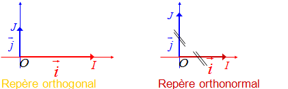

On dit un vecteur est unitaire lorsque le norme de ce vecteur est égal à \(1\). On dit deux vecteurs sont orthogonaux lorsque l’angle formé par les deux vecteurs est \(π\over 2\). Dans le figure ci-dessous, les vecteurs u⃗ et v⃗ sont unitaires et orthogonaux.
 Définition 1
On dit qu’un repère (O, i⃗ , j⃗ ) est \(orthonormal\) lorsque les vecteurs u⃗ et v⃗ sont unitaires et orthogonaux :
\(||\) u⃗ \(||\) \(=\) \(||\) v⃗ \(||\) et u⃗ · v⃗ \( = 0\)
Preuve : u⃗ · v⃗ \(=\) \(||\) u⃗ \(||\) \(*\) \(||\) v⃗ \(||\) \(*\) \(cos(θ)\)
Comme, repère (O, i⃗ , j⃗ ) est orthonormal, \( θ = \) \(π\over 2\) \(⇒ cos(θ) = 0\)
\(⇒\) u⃗ · v⃗ \(=\) \(||\) u⃗ \(||\) \(*\) \(||\) v⃗ \(||\) \(*\) \(cos(θ)\) \(= 1 * 1 * 0 = 0 \) \(⇒\) u⃗ · v⃗ \(= 0\)
Théorème 1
Le produit scalaire de deux vecteurs u⃗ et u⃗\('\) de coordonnées \((x; y)\) et \((x'; y')\) dans un repère orthonormal est donné par :
u⃗ · u⃗\('\) \( = xx' + yy'\)
Preuve : Soit deux vecteurs u⃗ et u⃗\('\) de coordonnées \((x; y)\) et \((x'; y')\) dans un repère orthonormal (O, i⃗, j⃗).
u⃗ · u⃗\('\) \( = (x\)i⃗ \(+\) \(y\)j⃗\() * (x'\)i⃗ \(+\) \(y\)'j⃗) \( = xx'\)( i⃗ )\(^2\) \(+ (xy' + yx')\)(i⃗ * j⃗) \(+ yy'\)( j⃗ )\(^2\).
Comme (O, i⃗ , j⃗) est un repère orthonormal, i⃗ \(·\) j⃗ \(= 0\). Comme les vecteurs i⃗ et j⃗ sont unitaires, || i⃗ || = || j⃗ || = 1 \(⇒\) ( i⃗ )\(^2 = \) ( j⃗ )\(^2 = 1\)
u⃗ · u⃗\('\) \( = xx'\)( i⃗ )\(^2\) \(+ (xy' + yx')\)(i⃗ * j⃗) \(+ yy'\)( j⃗ )\(^2\) = \(xx' * (1) + (xy' + yx')*(0) + (yy')*(1)\)
\(⇒\) u⃗ · u⃗\('\) \( = xx' + yy'\)
En tout particulier, pour tout vecteur u⃗ de coordonnées \((x, y)\) dans un repère orthonormal (O, i⃗ , j⃗) on a :
u⃗ · i⃗ \(= x\) et u⃗ · j⃗ \(= y\)
Preuve :
u⃗ · i⃗ \(= (x\)i⃗ \(+\) \(y\)j⃗) · i⃗ \(= x(\) i⃗ \()^2\) \(+ y\) (i⃗ · j⃗) \(= x*1 + y*0 = x\)
Car i⃗ · j⃗ \(= 0\) et ( i⃗ ) \(^2 = 1\) comme (O, i⃗ , j⃗) est un repère orthonormal.
Corollaires
Le plan \(𝓟\) est muni d’un repère orthonormal.
1) Deux vecteurs et non nuls, de coordonnées respectives \((x; y)\) et \((x'; y')\), sont orthogonaux si et seulement si, u⃗ · u⃗\('\) \(= 0\); par suite :
u⃗ \(⟂\) u⃗\('\) si, et seulement si, \(xx' + yy' = 0\)